Die Speicherriesen
Im folgenden Artikel nehmen wir für Sie die wichtigsten Diskettenlaufwerke von Commodore einmal unter die Lupe. Wir geben Ihnen Tips zum Kauf und zeigen Gemeinsamkeiten und Unterschiede aller Geräte. Dabei erfahren Sie auch, welches Gerät zu welchem Computer paßt.
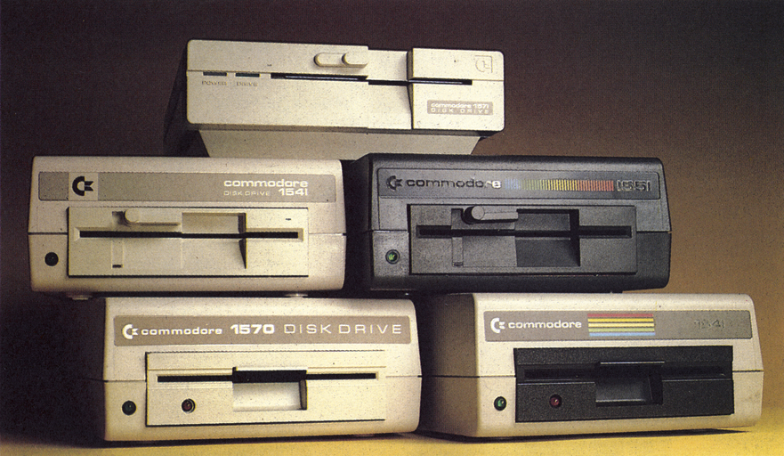
Spätestens wenn Sie mit Ihrem Computer nicht mehr nur noch spielen, sondern auch ernsthafter arbeiten wollen, reicht ein Kassettenrecorder als Massenspeicher nicht mehr aus. Sie benötigen zumindest ein Diskettenlaufwerk, das sowohl in bezug auf die Geschwindigkeit als auch in bezug auf die Datensicherheit der Datasette einiges voraus hat.
Nun kommt jedoch die Entscheidung. Welches Laufwerk paßt am besten zu Ihrem Computer? Wieviel Geld wollen Sie investieren?
Diese beiden Punkte zeigen, wie schwer einem die Entscheidung fallen kann, zumal die Diskettenstationen von Commodore ansonsten sehr viele Gemeinsamkeiten aufweisen.
Mehr Gemeinsamkeiten als Unterschiede
Wir wollen Sie nun in Ihrer Entscheidungskraft ein wenig stärken, indem wir Ihnen alle wichtigen Diskettenlaufwerke von Commodore für den C 64, C 128, C 16 und Plus/4 einmal vorstellen. Wenn Sie bereits Besitzer eines Diskettenlaufwerks sind, dann wird Ihnen der Artikel helfen, Programme an andere Laufwerke anzupassen oder die Eigenheiten Ihres speziellen Laufwerks auszunutzen.
Die vier Geräte, mit denen wir uns beschäftigen, tragen die Bezeichnungen 1541, 1551, 1570 und 1571 und wurden insbesondere für die Computer C 64 (1541), C 16 und Plus/4 (1551) und C 128 (1570, 1571) entwickelt. Das schließt natürlich nicht von vornherein aus, daß die Laufwerke nicht auch unter den Computern ausgetauscht werden können.
Das Konzept des Artikels erlaubt es Ihnen, anhand der Tabellen einen schnellen und vergleichenden Überblick zu bekommen. Im Text werden wir jedes Gerät einzeln behandeln und dessen Eigenschaften herausstellen, um Ihnen den Anwendungs- und Einsatzbereich etwas vor Augen zu führen.
Der Stammvater
An erster Stelle unserer Ausführungen steht natürlich die 1541 (Bild 1). Sie wurde sehr schnell als direkte Nachfolgerin der 1540 auf den Markt gebracht, um auch für den C 64 die Welt der Massenspeicher zu erschließen. Die 1540 war ursprünglich nämlich nur für den Anschluß an einen VC 20 vorgesehen und konnte am C 64 nicht betrieben werden.
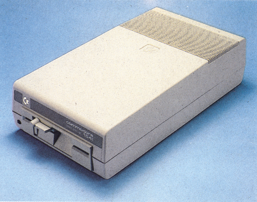
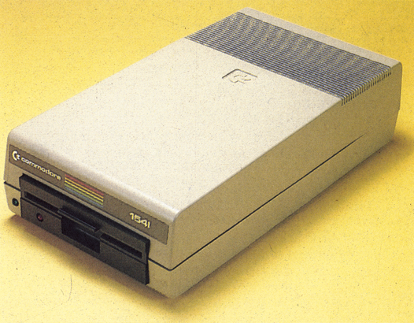
Zuerst beschäftigen wir uns ein wenig mit der Hardware. Wenn die 1541 aufgeschraubt wird, dann kommt sofort die Platine mit den elektronischen Bauelementen zum Vorschein (Bild 2). Sie enthält neben dem 6502-Mikroprozessor zwei 6522-Interface-Bausteine (VIA), 2 KByte statisches RAM, 16 KByte ROM und einen »Diskcontroller« in Form eines Logic-Arrays. Fast alle übrigen Bauteile bilden den Analogteil der Platine und sind für die Schreib- und Lesesteuerung der 1541 zuständig.
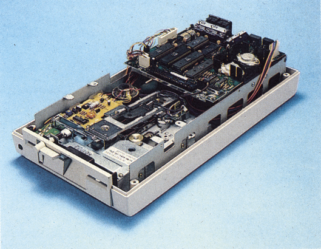
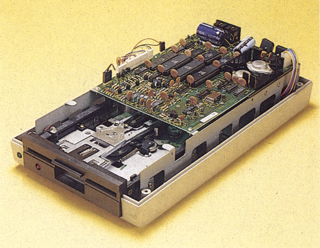
Es kann durchaus sein, daß sich in Ihrem Laufwerk eine etwas andere Platine als auf unserem Foto (Bild 2) befindet. Insgesamt gibt es mindestens vier verschiedene Versionen der 1541, wobei im Betriebssystem jedoch keine grundlegenden Änderungen vorgenommen wurden.
Wenn Sie Tabelle 1 betrachten, dann sehen Sie dort die im einzelnen aufgeführten technischen Daten der 1541. Es handelt sich hier um ein Prozessorsystem mit 1 MHz Taktfrequenz. Die Verbindung zum Computer erfolgt durch den seriellen Bus, der sich als Standard bei Commodore eingebürgert hat. Dieser Bus läßt Übertragungsraten bis zu 1200 bit/s pro Sekunde zu, und die 1541 liegt in der Geschwindigkeit damit ganz hinten unter allen Diskettenstationen von Commodore.
| Speicherkapazität | 174 848 Byte total 169 984 Byte frei |
| Directoryeinträge | 144 |
| Anzahl der Spuren | 35 |
| Anzahl der Sektoren (Blocks) | 683 insgesamt 664 frei 17 bis 21 pro Spur |
| Kapazität eines Sektors | 256 Byte (mit Linkpointern) |
| Aufzeichnungsformat | GCR (...) |
| Aufzeichnungsrate | 250 000 bit/s Abschnitt 1 266 664 bit/s Abschnitt 2 285 712 bit/s Abschnitt 3 307 688 bit/s Abschnitt 4 |
| Bestückung | 6502 Mikroprozessor VIA 6522 (2) 2 KByte statisches RAM Logic-Array als Diskcontroller |
| Taktfrequenz | 1 MHz |
| Übertragungsrate | 1200 bit/s seriell |
Für die 1541 gibt es als Abhilfe zur Zeit jedoch sehr viele Systeme zur Beschleunigung, die oft Geschwindigkeiten erreichen, die um den Faktor 30 über der Originalgeschwindigkeit liegen. Diese Beschleuniger nutzen die Tatsache, daß nicht das Laufwerk an sich so langsam ist, sondern lediglich die Schnittstelle zum Computer. Sie finden in dieser Ausgabe einen großen Vergleichstest, für die bekanntesten Beschleunigungssysteme, der sämtliche Stärken und Schwächen dieser Produkte aufzeigt.
Bei der 1541 gibt es auf dem Markt zur Zeit zwei verschiedene Ausführungen von Laufwerken. Dabei handelt es sich einmal um ein Laufwerk mit Klappverschluß und zum anderen um ein Laufwerk mit Knebelverschluß. Haben Sie die Wahl zwischen beiden Laufwerkstypen, so ist das mit dem Knebelverschluß vorzuziehen, da es eine bessere Mechanik aufweist. Der Knebelverschluß hat seinen Namen von der Art der Diskettenfixierung im Laufwerk. Hier wird ein Hebel senkrecht nach unten geklappt und das Laufwerk damit verschlossen. Beim Klappverschluß drücken Sie eine Klappe nach unten, und die Diskette wird verriegelt.
Die Mechanik der 1541 ist ziemlich starken Belastungen ausgesetzt. Da ist einmal die Temperatur. Sie wird durch die beiden integrierten Festspannungsregler auf der Platine stark erhöht und sorgt damit unter Umständen für ein Verstellen des Laufwerks unter extremen Einsatz. Zum anderen unterstützt auch das Betriebssystem nicht gerade eine Schonung der Mechanik. Bei Lesefehlern und beim Formatieren von Disketten wird der Schreib-/Lesekopf der 1541 auf den Nullanschlag zurückgefahren, was sich durch ein ziemlich häßliches Rattern bemerkbar macht.
Dieses Anschlagen ist im Zusammenhang mit hoher Betriebstemperatur der Hauptgrund für verstellte Laufwerke, weshalb die 1541 gerade im Dauerbetrieb schonend behandelt werden sollte; also zum Beispiel keine »Formatierstunden« einlegen. Es sollten immer höchstens 10 Disketten hintereinander formatiert werden, um ein Verstellen des Tonkopfes zu vermeiden.
Die neue 1541
Im Gegensatz zu allen anderen Laufwerken von Commodore besitzt die 1541 keine Anlaufsteuerung beim Einlegen einer Diskette. Diese Anlaufsteuerung schaltet dabei in der Regel kurzzeitig den Laufwerksmotor ein, um das Zentrieren einer Diskette zu erleichtern. Es ist jedoch seit kurzem eine neue Version der 1541 von Commodore auf den Markt gekommen (Bild 1 und 2), die nicht nur eine völlig neue Platine, sondern auch eine Anlaufsteuerung und eine Lichtschrankenabtastung für die Spur-Null-Position besitzt. Damit dürfte das typische Anschlagen des Schreib-/Lesekopfes der 1541 ein für allemal aus der Welt geschafft sein. Inwieweit die neue 1541 jedoch kompatibel zur »alten« ist, muß sich erst noch herausstellen. Erkennen können Sie das neue Laufwerk daran, daß der Laufwerksmotor beim Einlegen einer Diskette anläuft, um diese zu zentrieren.
Der Befehlssatz der 1541 ist für alle Diskettenlaufwerke von Commodore die Grundlage. Er erlaubt sehr komfortabel das Manipulieren von Disketten und wichtigen Funktionen der 1541. Das fängt beim Erstellen von Dateien an und geht über das Aufbringen eines Kopierschutzes bis hin zu professionellen Nibble-Kopierprogrammen wie Turbo Nibbler oder Fast Hack'em.
Wenn Sie sich genauer mit diesen Einzelheiten beschäftigen wollen, dann dürfte der, ebenfalls in dieser Ausgabe, vollständig abgedruckte Floppy-Kurs genau das Richtige für Sie sein. Er erläutert sämtliche Befehle der 1541 und gibt interessante Tips und Tricks zur Programmierung dieses sicherlich »außergewöhnlichen« Geräts. In Tabelle 2 sehen Sie den Befehlssatz der 1541 abgedruckt.
| Befehl | Wirkung |
|---|---|
| NEW | Formatieren einer Diskette |
| INITIALIZE | Initialisieren einer Diskette |
| VALIDATE | Wiederherstellen der BAM (...) |
| COPY | Kopieren von Files |
| RENAME | Umbenennen eines Files |
| SCRATCH | Löschen eines Files |
| POSITION | Setzen des Recordzeigers |
| B-R | Lesen eines Sektors |
| B-W | Schreiben eines Sektors |
| B-A | Belegen eines Sektors in der BAM |
| B-F | Freigeben eines Sektors in der BAM |
| B-E | Ausführen eines Programms in einem Sektor |
| B-P | Setzen des Pufferzeigers in einem Sektor |
| M-R | Lesen von Speicherinhalten des Laufwerks |
| M-W | Schreiben von Speicherinhalten |
| M-E | Starten eines Maschinenprogramms im Laufwerk |
| U1 | Lesen eines Sektors |
| U2 | Schreiben eines Sektors |
| U3 bis U8 | Programmstarts im Benutzerpuffer |
| U: | Reset ausführen |
| & | Laden und Starten eines Maschinenprogramms |
Als Diskettenlaufwerk ist die 1541 hauptsächlich für den C 64 entwickelt worden. Sie läuft aber auch am C 16, C 116 und am Plus/4. Für den Commodore 128 kann die 1541 ebenfalls verwendet werden. Hier gibt es jedoch in der Regel Probleme mit der Geschwindigkeit, doch dazu später mehr.
Daß die 1541 am C 16 und am Plus/4 betrieben werden kann, heißt noch lange nicht, daß sie auch für diese Computer entwickelt wurde oder umgekehrt. Äußerlich wird das schon dadurch deutlich, daß hier ein ziemlich unschöner Farbkontrast auftritt. Der C 16/C 116 und der Plus/4 sind schwarz, die 1541 hingegen erstrahlt in einem hellen Beige.
Neben der 1541 für den C 64 gibt es für C 16- und Plus/4-Besitzer die 1551, die von Commodore speziell für den C 16 und den Plus/4 entwickelt wurde.
Äußerlich präsentiert sie sich in einem eleganten schwarzen Gehäuse mit einem Knebelverschluß. Von allen Laufwerken von Commodore handelt es sich bei der 1551 sicherlich um den größten »Exoten«.
Laufwerk mit Parallelkabel
Im Gegensatz zu allen anderen Einzellaufwerken (die Laufwerke mit IEEE-488-Bus sind hier ausgenommen) arbeitet die 1551 mit einer Parallelverbindung zum Computer. Das bedeutet natürlich, daß kein Anschluß an die Buchsen des seriellen Bus mehr erfolgen kann. Die 1551 tritt vielmehr über den Expansion-Port mit dem Computer in Kontakt.
Dieser Anschluß hat zwei Konsequenzen:
Erstens braucht der Anwender einen Anschluß der preiswerten 1551 an den C 64 erst gar nicht in Betracht zu ziehen, da die Belegung des Expansion-Port am C 64 nicht mit der des C 16 und Plus/4 übereinstimmt.
Und zweitens kann man davon ausgehen, daß die 1551 am C 16 und Plus/4 schneller arbeitet als die 1541. In der Tat ist die Verarbeitungsgeschwindigkeit hier etwa viermal höher, was durch die höhere Übertragungsrate einer Parallelverbindung hervorgerufen wird.
Neben der Parallelverbindung wurden bei der 1551 noch ein paar andere Dinge gegenüber der 1541 verbessert. So verfügt die 1551 zum Beispiel über eine Anlaufsteuerung, die den Laufwerksmotor kurz anfahren läßt, wenn man eine Diskette einlegt.
Schraubt man die 1551 auf (Bild 3), fällt einem sofort die neue Platine ins Auge, die gegenüber der 1541 gravierende Unterschiede aufweist. Da ist einmal der Mikroprozessor. Hier handelt es sich im Gegensatz zur 1541 (mit Prozessor 6502) um einen 6510T. Der 6510 findet auch im C 64 Verwendung, da er einen eingebauten I/O-Port besitzt und so seine Speicherverwaltung steuern kann.
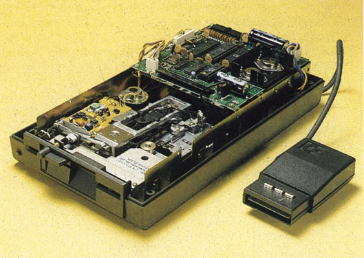
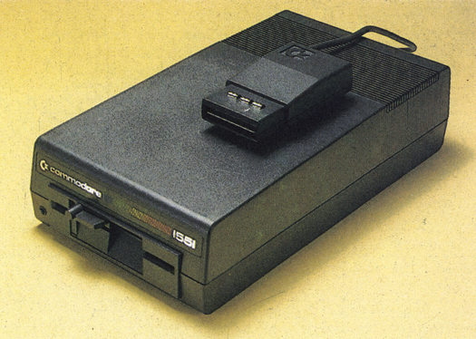
Anstatt zweier VIA 6522 wie in der 1541 findet man in der 1551 einen einzigen TIA 6525. TIA steht für »Triport Interface Adapter«. Wir haben es also mit einem Interface-Baustein zu tun, der über drei 8-Bit-Schnittstellen verfügt. Das erlaubt einen vollständigen Ersatz der zwei VIA 6522. Der TIA 6525 findet übrigens auch schon in den Personal Computern der Reihe CBM 700 Verwendung. Es handelt sich hierbei also keineswegs um eine Neuentwicklung.
Überraschend an der 1551 ist die Platine, die mindestens um die Hälfte kleiner als die der 1541 ist. Diese Miniaturisierung wird durch ein neuartiges Bauteil ermöglicht, das entfernt an einen Hybridschaltkreis erinnert, jedoch den gesamten Analogteil der Diskettenstation enthält. Mit Analogteil ist dabei die Schreib-/Leseelektronik mit den Verstärkerstufen gemeint.
Die neue Version der 1541 enthält übrigens ebenfalls diesen integrierten Baustein, so daß auch hier eine sehr viel kleinere Platine entwickelt werden konnte.
Bei der 1551 handelt es sich, wie schon bei der 1541, um ein Prozessorsystem mit 1 MHz Taktfrequenz. Die technischen Daten entnehmen Sie bitte der Tabelle 3.
| Speicherkapazität | 174 848 Byte total 169 984 Byte frei |
| Directoryeinträge | 144 |
| Anzahl der Spuren | 35 |
| Anzahl der Sektoren (Blocks) | 683 insgesamt 664 frei 17 bis 21 pro Spur |
| Kapazität eines Sektors | 256 Byte (mit Linkpointern) |
| Aufzeichnungsformat | GCR (. . .) |
| Aufzeichnungsrate | 250 000 bit/s Abschnitt 1 266 664 bit/s Abschnitt 2 285 712 bit/s Abschnitt 3 307 688 bit/s Abschnitt 4 |
| Bestückung | 6510T Mikroprozessor TIA 6525 6523A 2 KByte statisches RAM Logic-Array als Diskcontroller |
| Taktfrequenz | 1 MHz |
| Übertragungsrate | zirka 6000 bit/s parallel |
Der Befehlssatz der 1551 ist fast identisch zu dem der 1541. Bei Tests konnte kein Programm gefunden werden, das mit einem C 16 und einer 1541 läuft und mit einer 1551 nicht. Die Kompatibilität ist also offensichtlich sehr hoch, wobei die 1551 jedoch im Gegensatz zur 1541 zusätzlich zwei sehr interessante Befehle enthält. Einmal kann die Anzahl der Leseversuche bei Fehlern und zweitens der Sektorabstand beim Schreiben von Dateien ganz bequem eingestellt werden. Die Befehlsliste ist in Tabelle 4 abgedruckt.
| Befehl | Wirkung |
|---|---|
| NEW | Formatieren einer Diskette |
| INITIALIZE | Initialisieren einer Diskette |
| VALIDATE | Wiederherstellen der BAM |
| COPY | Kopieren von Files |
| RENAME | Umbenennen eines Files |
| SCRATCH | Löschen eines Files |
| POSITION | Setzen des Recordzeigers |
| B-R | Lesen eines Sektors |
| B-W | Schreiben eines Sektors |
| B-A | Belegen eines Sektors in der BAM |
| B-F | Freigeben eines Sektors in der BAM |
| B-E | Ausführen eines Programms in einem Sektor |
| B-P | Setzen des Pufferzeigers in einem Sektor |
| M-R | Lesen von Speicherinhalten des Laufwerks |
| M-W | Schreiben von Speicherinhalten |
| M-E | Starten eines Maschinenprogramms im Laufwerk |
| U1 | Lesen eines Sektors |
| U2 | Schreiben eines Sektors |
| U3 bis U8 | Programmstarts im Benutzerpuffer |
| U: | Reset ausführen |
| & | Laden und Starten eines Maschinenprogramms |
| %R | Setzen der Leseversuche bei Fehlern |
| %S | Sektorabstand beim Schreiben setzen |
Das »Zwischending«
Beim C 64 konnte man sich noch mit Notlösungen behelfen, wenn es um schnelles Laden ging. Da der C 128 von Commodore jedoch als Personal Computer verkauft wird, reichte die 1541 nicht mehr aus.
Hier ging es jedoch nicht unbedingt um die Geschwindigkeit des Diskettenlaufwerks. Ausschlaggebend für die Entwicklung neuer Laufwerke war vielmehr die Eigenschaft des C 128, auch CP/M-fähig zu sein.
Die 1541 und auch die 1551 ist technisch nicht in der Lage, Disketten zu lesen oder zu beschreiben, die im MFM-Format (Diskettenformat vieler anderer Laufwerke) geschrieben worden sind. Um das zu realisieren, mußte ein Diskettenlaufwerk her, das einen MFM-Diskcontroller enthält. Hier verwendet man üblicherweise den WD 1770 von Western Digital, der in sehr vielen Laufwerken enthalten ist.
Auch die 1570 gehört zu den Laufwerken, die diesen Diskcontroller beinhalten. Die Mechanik der 1570 entspricht weitgehend der Mechanik der 1541. Lediglich die Elektronik wurde komplett überarbeitet.
Schraubt man die 1570 auf, so erscheint die neue Platine (Bild 4). Auf dieser Platine kann man eine Menge an Bauteilen ausfindig machen, die aus der 1570, im Gegensatz zur 1541, wiederum ein komplett neues Gerät machen. Gleich geblieben sind die, schon in der 1541 enthaltenen Chips, Mikroprozessor 6502, zwei VIA 6522 und ein Logic-Array, das bei Commodore als Diskcontroller eingesetzt wird.
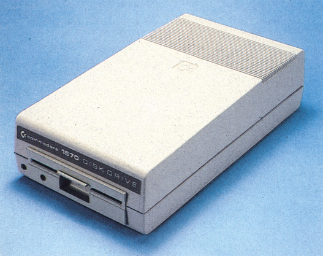
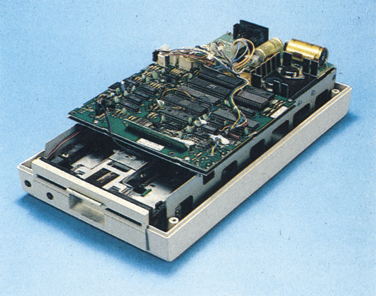
Auffällig sind die beiden VIA 6522. Hierbei handelt es sich nämlich um qualitativ sehr hochwertige 65C22 – also um die stromsparenden CMOS-Versionen. Der Prozessor ist in der Regel vom Typ 6502A, was ihn als 2-MHz-Version kennzeichnet.
Neu auf der Platine ist der schon erwähnte WD 1770 und ein CIA 6526. Der CIA findet auch im C 64 Verwendung, wobei CIA für »Complex Interface Adapter« steht.
Die 1570 enthält gegenüber der 1541 und auch der 1551 eine ganze Menge an zusätzlichen Neuheiten. Die Anlaufsteuerung beim Einlegen einer Diskette und eine Lichtschranke an der Spur-Null-Position sind dabei nur Nebensächlichkeiten.
Lesen von Fremdformaten
Der erste Unterschied wird deutlich, wenn man sich das ROM betrachtet, in dem das Betriebssystem der 1570 untergebracht ist. Im Gegensatz zur 1541 und zur 1551 handelt es sich hierbei um ein ROM mit 32 KByte Betriebssystem, also genau die doppelte Kapazität zur 1541.
In diesem ROM sind zum Beispiel die Routinen für den »normalen« Betrieb der 1570 vorhanden. Diese Routinen stellen im Prinzip das vollständige Betriebssystem der 1541 dar, weshalb die 1570 auch weit über 90 Prozent kompatibel zur 1541 ist.
Andererseits finden sich im ROM auch Teile zur Steuerung des Diskcontrollers WD 1770. Diese Erweiterung ist derart mächtig, daß die 1570 in die Lage versetzt wird, fast alle Disketten von bekannten Personal Computern zu lesen. Disketten von IBM, Kaypro, Osborne, Triumph Adler oder Compaq sind also kein Problem und können mit entsprechenden Programmen im Computer bequem verarbeitet werden.
Damit diese Diskettenformate überhaupt verwendet werden können, sind natürlich auch ein paar grundlegende Einrichtungen notwendig. Da ist zum einen die Möglichkeit zur Überwachung des Indexlochs einer Diskette. Hierfür hat die 1570 eine weitere Lichtschranke mit Infrarot-LED, die neben der Laufwerksachse angebracht ist.
Zur Verstärkung und Verarbeitung von Signalen dient in der 1570 ebenfalls die schon beschriebene Schaltung, die einen Hybridschaltkreis enthält.
Betrachtet man die 1570 als ganzes Gerät, so fällt auf, daß in diesem Diskettenlaufwerk eigentlich zwei verschiedene Geräte implementiert wurden.
Zum einen finden wir eine fast vollständige 1541 in der 1570 vor. Es wurden nur die Teile geändert, die für den erweiterten Betrieb der 1570 unbedingt notwendig sind. Wir sprechen in diesem Zusammenhang vom 1541-Modus, da diese Betriebsart über einen Befehl eingeschaltet werden kann.
Arbeitet man nicht im 1541-Modus, so befindet sich das Laufwerk immer im 1570-Modus. Hier steht ein sehr mächtiger und erweiterter Befehlssatz zur Verfügung (Tabelle 6), und das Laufwerk arbeitet nun mit einer Systemtaktfrequenz von 2 Megahertz. Jetzt wird auch deutlich, warum bei der Bestückung der Platine nur hochwertige Bauteile verwendet wurden. Die Bauteile müssen in der Lage sein, auch mit 2 MHz einwandfrei zu arbeiten.
Interessant an der 1570 ist aber sicherlich auch das neue Konzept des seriellen Bus. Arbeitet man im 1541-Modus, so arbeitet der serielle Bus wie von der 1541 her bekannt.
Im 1570-Modus schaltet sich jedoch der CIA 6526 in den Busbetrieb ein. Hier wird über das schnelle Schieberegister eine sehr viel höhere Übertragungsrate des seriellen Bus erreicht, die bis über 120 000 bit/s erreichen kann.
Das erklärt auch die höhere Geschwindigkeit der 1570 gegenüber der 1541, die rein rechnerisch um den Faktor 100 höher ist. Diese Geschwindigkeitssteigerung kann jedoch normalerweise nur auf dem C 128 im C 128-Modus erreicht werden, da der C 64 den seriellen Bus anders beschaltet hat und somit nicht über ein angeschlossenes Schieberegister verfügt.
Sie können die 1570 dennoch am C 64 problemlos betreiben. Die meisten Programme laufen ohne Schwierigkeiten. Wollen Sie die hohe Geschwindigkeit der 1570 auch am C 64 oder am C 128 im C 64-Modus erreichen, so ist das Einlöten von zwei Kabeln und das Ändern des Betriebssystems erforderlich. Die 1570 wird dann zwischen sieben- und neunmal so schnell, wie im 1541-Modus.
Einen Beschleuniger dieser Art finden Sie übrigens im 64'er- Magazin, Ausgabe 9/86, als »Listing des Monats«.
Das »Flaggschiff«
Neben der 1570 gibt es für den Commodore 128 auch noch ein anderes Diskettenlaufwerk, das die 1570 trotz deren Leistungsfähigkeit diesbezüglich noch übertrifft. Gemeint ist die 1571.
Dieses Laufwerk war ursprünglich schon vor der 1570 auf dem Markt. Commodore wollte jedoch noch eine »abgespeckte« Billigversion der 1571 produzieren, da die 1571 bei der Einführung nicht gerade preisgünstig zu haben war.
Prinzipiell gibt es nur zwei große Unterschiede zwischen beiden Diskettenlaufwerken, wobei der rein äußerliche Unterschied vernachlässigt werden soll.
Schraubt man die 1571 auf (Bild 5), so fällt sofort der komplett andere Aufbau im Inneren auf. Da ist zum einen das Laufwerk. Es handelt sich hierbei um ein komplett anderes Laufwerk als in der 1570. Aus dem großen Netztransformator, wie er in allen übrigen Laufwerken von Commodore zu finden ist, wurde ein kleines Netzteil eingebaut, das in einem Gitterkäfig untergebracht ist. Die Platine befindet sich unter dem Netzteil und ist somit vor zu großer Hitze geschützt.
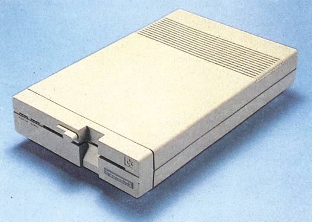
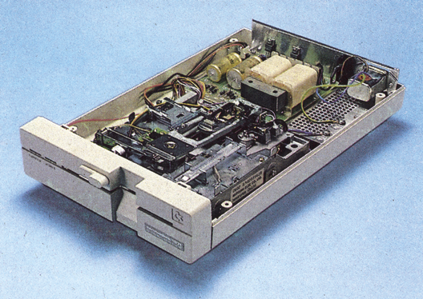
Betrachtet man sich die Laufwerksmechanik genauer, so fällt sofort die Stärke der 1571 ins Auge. Es handelt sich hier um ein Laufwerk, das Disketten doppelseitig beschreiben kann, also zwei Schreib-/Leseköpfe besitzt. Die Folge dieser Einrichtung ist eine höhere Speicherkapazität (340 KByte) im Gegensatz zu allen anderen Laufwerken (170 KByte). Eine Diskette braucht also in Zukunft nicht mehr »gestanzt« und umgedreht zu werden. Sie wird einfach auf der 1571 formatiert und schon zeigt sich das Directory in ganz neuem Gewand: »1328 BLOCKS FREE«.
Wie die 1570, so besitzt auch die 1571 einen 1541-Modus. In diesem Modus arbeitet sie nach wie vor nur einseitig. Wir können also auch die 1571 problemlos an einem C 64 betreiben; allerdings mit dem Nachteil des Geschwindigkeitsverlustes.
Die technischen Daten zur 1571 finden Sie vergleichend zur 1570 in Tabelle 5. Der Befehlssatz ist in Tabelle 6 abgedruckt.
| Speicherkapazität | 174 848 (349 696) Byte total unter GCR 169 984 (339 968) Byte frei unter GCR 133 120 bis 204 800 Byte unter MFM (266 240 bis 409 600 bei 1571) |
| Directory-Einträge | 144 |
| Anzahl der Spuren | 35 (70) unter GCR 40 (80) unter MFM |
| Anzahl der Sektoren | 683 (1366) insgesamt unter GCR 664 (1328) frei unter GCR 17 bis 21 pro Spur unter GCR 200 bis 1040 (400 bis 2080) insg. unter MFM 5 bis 26 pro Spur unter MFM |
| Kapazität eines Sektors | 256 Byte unter GCR (mit Linkpointern) 128, 256, 512, 1024 unter MFM |
| Aufzeichnungsformat | GCR und MFM |
| Aufzeichnungsrate | 250 000 bit/s Abschnitt 1 unter GCR 266 664 bit/s Abschnitt 2 unter GCR 285 712 bit/s Abschnitt 3 unter GCR 307 688 bit/s Abschnitt 4 unter GCR |
| Bestückung | 6502 Mikroprozessor VIA 65C22 (2) CIA 6526 2 KByte statisches RAM Logic Array als Diskcontroller für GCR WD 1770 Diskcontroller für MFM |
| Taktfrequenz | 1 und 2 MHz |
| Übertragungsrate | 1200 bit/s seriell (1541-Modus) bis 167 000 bit/s seriell (1570/71-Modus) |
| Befehl | Wirkung |
|---|---|
| NEW | Formatieren einer Diskette |
| INITIALIZE | Initialisieren einer Diskette |
| VALIDATE | Wiederherstellen der BAM |
| COPY | Kopieren von Files |
| RENAME | Umbenennen eines Files |
| SCRATCH | Löschen eines Files |
| POSITION | Setzen des Recordzeigers |
| B-R | Lesen eines Sektors |
| B-W | Schreiben eines Sektors |
| B-A | Belegen eines Sektors in der BAM |
| B-F | Freigeben eines Sektors in der BAM |
| B-E | Ausführen eines Programms in einem Sektor |
| B-P | Setzen des Pufferzeigers in einem Sektor |
| M-R | Lesen von Speicherinhalten des Laufwerks |
| M-W | Schreiben von Speicherinhalten |
| M-E | Starten eines Maschinenprogramms im Laufwerk |
| User-Befehle: | |
| U1 | Lesen eines Sektors |
| U2 | Schreiben eines Sektors |
| U3 bis U8 | Programmstarts im Benutzerpuffer |
| U: | Reset ausführen |
| & | Laden und Starten eines Maschinenprogramms |
| U0-Befehle: | |
| BURST READ | Lesen eines Sektors unter MFM oder GCR |
| BURST WRITE | Schreiben eines Sektors unter MFM oder GCR |
| INQUIRE DISK | Diskette initialisieren |
| FORMAT | Diskette beliebig formatieren |
| SECTOR INTERLEAVE | Sektorabstand setzen/holen |
| QUERY DISK | Diskettenformat identifizieren |
| INQUIRE STATUS | Burst-Status setzen/holen |
| FASTLOAD | Schnellader einschalten |
| U0>M0 | 1541-Modus einschalten |
| U0>M1 | 1570/71-Modus einschalten |
| U0>S | Sektorabstand beim Schreiben setzen |
| U0>R | Leseversuche bei Fehlern setzen |
| U0>T | Prüfsumme über ROM testen |
| U0>H | Diskettenseite setzen (nur 1571) |
| U0> | Gerätenummer des Laufwerks setzen |
Welches Gerät an welchem Computer?
Zusammenfassend vielleicht noch einmal die Anschlußmöglichkeiten aller Diskettenlaufwerke von Commodore. In Tabelle 7 sehen Sie diese im Überblick.
| Computer | Diskettenlaufwerk | Kompatibilität zu vorhandener Software |
|---|---|---|
| C 64 | 1541 | 100 Prozent |
| 1570 | nahezu 98 Prozent | |
| 1571 | nahezu 95 Prozent | |
| C 128 | 1541 | ungeeignet für CP/M |
| 1570 | nahezu 99 Prozent | |
| 1571 | 100 Prozent | |
| C 16, C 116, Plus/4 | 1551 | 100 Prozent (?) |
| 1541 | 100 Prozent | |
| 1570 | 100 Prozent | |
| 1571 | nahezu 98 Prozent | |
| VC 20 | 1541 | 100 Prozent |
| 1570 | nahezu 99 Prozent | |
| 1571 | nahezu 98 Prozent |
Prinzipiell können Sie jedes Laufwerk (ausgenommen die 1551) an jeden Computer anschließen. Bei der 1541 am C 128 ergibt sich jedoch die Einschränkung, daß die Diskettenformate von zum Beispiel IBM oder Kaypro nicht gelesen werden können. Die 1551 kann nur am C 16, C 116 und Plus/4 angeschlossen werden. Die Kompatibilität ist bei den Laufwerken untereinander sehr hoch. Es gibt jedoch auch Ausnahmen. So befindet sich offensichtlich eine Produktreihe auf dem Markt, bei der die 1571 mit nur sehr wenigen 1541-Programmen läuft. Wir konnten noch nicht herausfinden, woran diese Inkompatibilität im einzelnen liegt. In der Regel laufen fast alle Programme der 1541 problemlos auch auf der 1570 und 1571. Auch die neue 1541 bildet hier keine Ausnahme.
(ks)